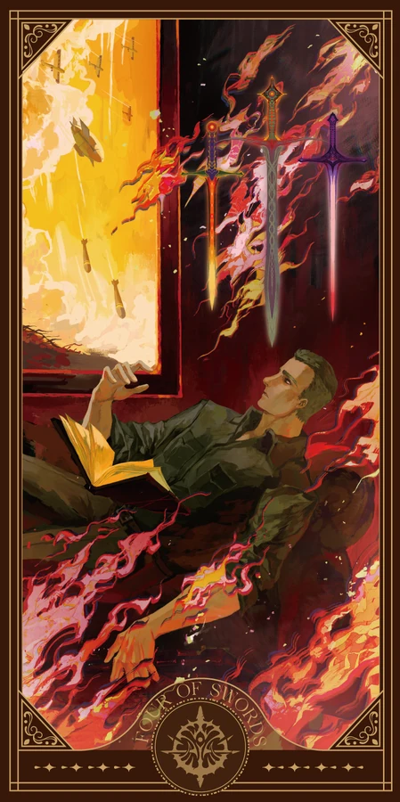
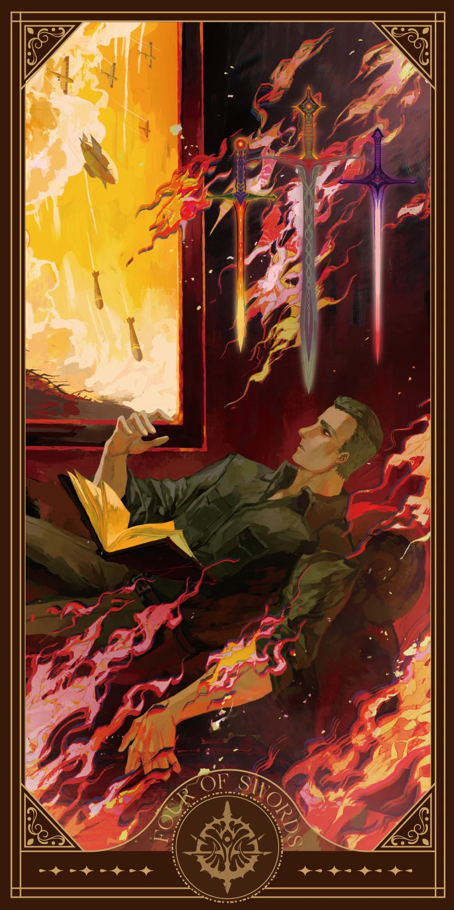

Anthony Reid is a retired soldier from the West Midseashire Coast turned information broker. He is a Beyonder of the Visionary.
This page includes major-spoiler information from the linked source article. The fact fields below are transcribed from that article’s character infobox.Overview
Anthony Reid is a retired soldier from the West Midseashire Coast turned information broker. He is a Beyonder of the Visionary.
The page uses the source article’s current naming, status, and progression terminology rather than the older roster shorthand.
Appearance
Complete wiki information
Full main-article information imported from the Anthony Reid wiki article. Existing project profile details above are preserved.
Over these past few years, my heart has been seared by anguish and righteous anger.
Anthony Reid is a retired soldier from the West Midseashire Coast turned information broker. He is a Beyonder of the  Visionary Pathway.
Visionary Pathway.
He is a Minor Arcana of the Tarot Club formerly under Justice and currently under The Chariot, with the codename Four of Swords.
Appearance
The man wore a military-green shirt, matching pants, and laceless leather boots. His hair was cropped to a fine buzz cut.
He didn’t possess the tidy, efficient air of a veteran. His light yellow hairline had receded considerably, leaving a vast expanse of forehead. His face had grown plump, his beard meticulously shaven. His skin was slightly oily and his nose pores clogged. He appeared somewhat guileless and unsophisticated.
Role & affiliations
Aliases and titles
- Four of Swords
- An Ruide
Affiliations
- Church of the Ruler of Calamity
- Tarot Club
- Sick Church
- Psychology Alchemists
Occupation(s)
- Pope of the Church of the Ruler of Calamity
- Acting Pope of the Sick Church
- Information Broker
- Soldier
Religion(s)
- Church of the Ruler of Calamity
- Church of the Fool
- Church of the God of Steam and Machinery
Pathway & abilities
Pathway: Visionary
Recorded progression: Not listed

QuotesNo entries
Complete quote entries transcribed from the character’s dedicated wiki Quotes page. The collection includes available Book One and Book Two entries.
No quote entries are currently published on the wiki’s dedicated Anthony Reid Quotes page.
Image gallery

